StatementAbout the work
Love is wild and bloody from the scratch (Molana-Iranian Poet)
In this series I have painted car crash images (firstly collaged in photoshop and then painted with oil color). I used the cars and their compositions as a means to invoke erotic feelings. I chose cars because of their social and economic methaphors and also their expressions in terms of conceptual design. The paintings I made are about lust for violence and death in Erotism. This is a critique of Love and questions the human death instinct.
Apocalypse
The second series of my paintings are reflections on the very idea of death in daily life. It's both about criticizing the society which I live in, and a manifest stating the everlasting connection between life and death. "PLACE" is the core theme of this series which is drastically ruined. dying city is where life does not exist and the connection between life and death is torn away. The "PLACE" itself is the embodiment of "DEATH" here.
Zahra Ghyasi
Works12 artworks

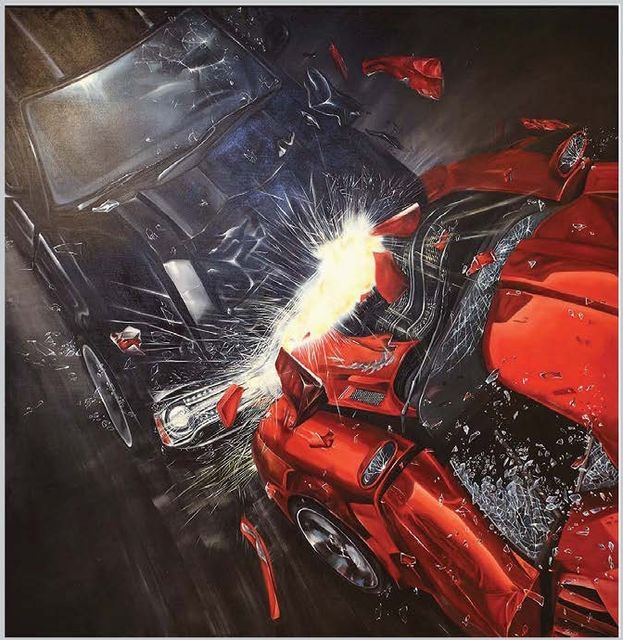

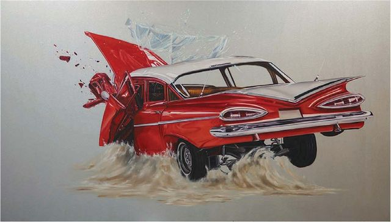

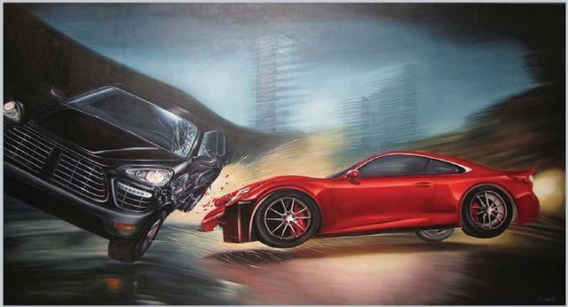

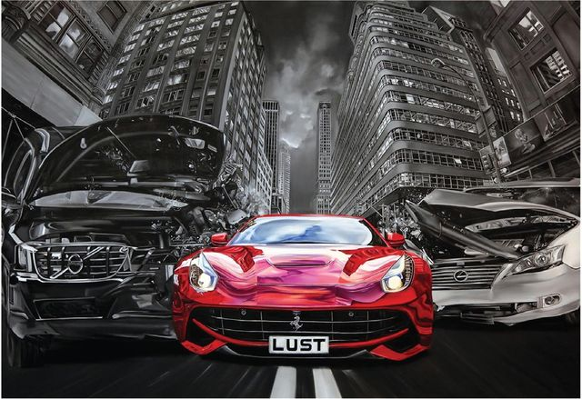

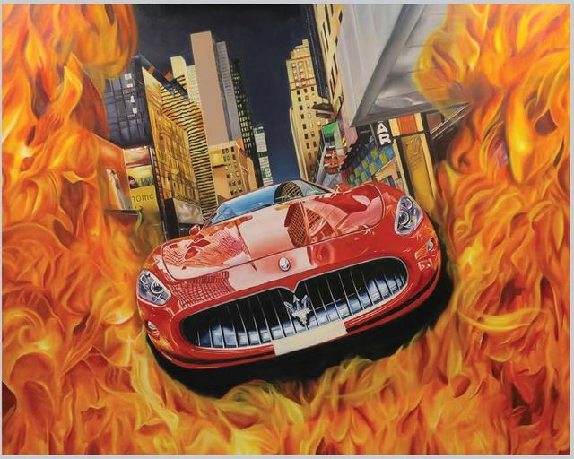

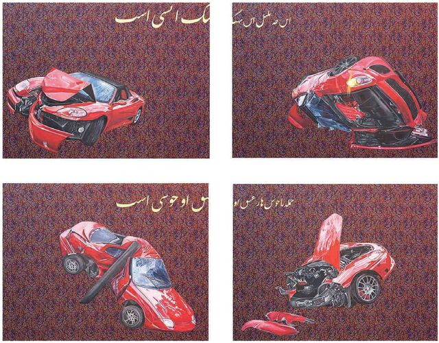

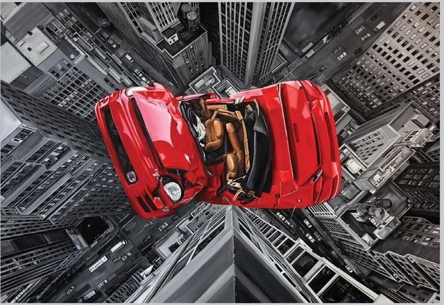

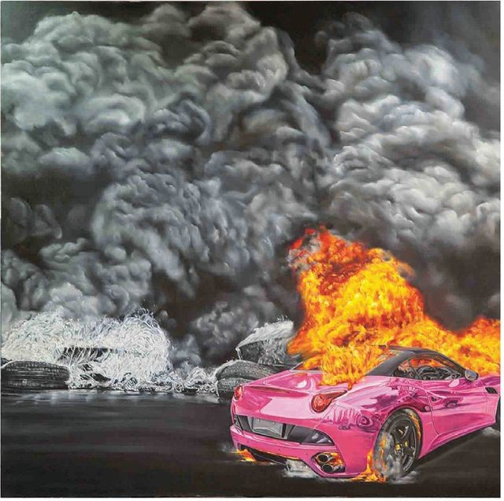

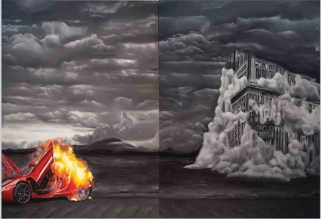

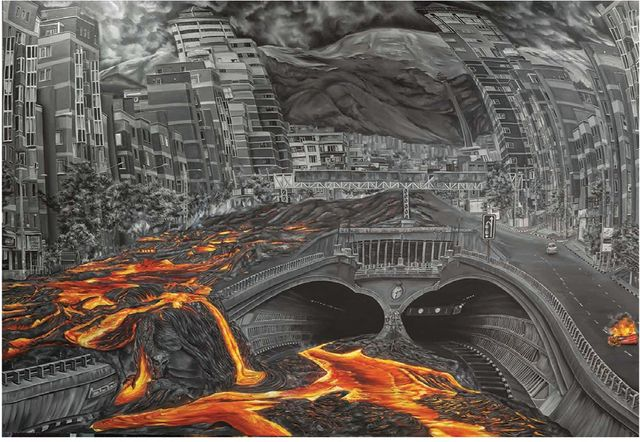

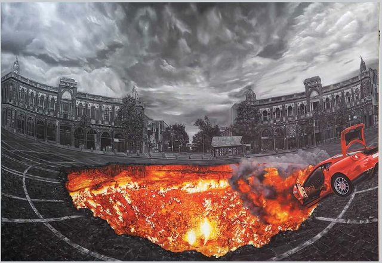

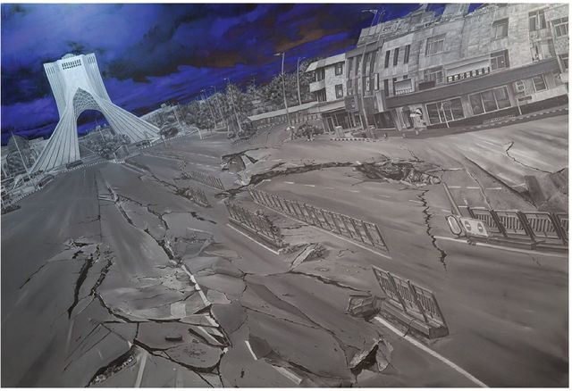
History of experienceBiography · education · exhibitions · awards
Educations
- B.A in Computer Engineering, Iran University of Science and Technology
- M.A in Management Executive, Iran University of Science and Technology
Solo exhibitions
- 2015Shokouh Gallery|Tehran – Iran
Group exhibition
- 2015Leading Youth, Pardis Mellat|Tehran – Iran
- 2015Seven Visions, Niavaran Cultural Center|Tehran – Iran
- 2015Small Boards, Arya Gallery|Tehran – Iran
- 2015Shokouh Gallery|Tehran – Iran
- 2014First Today, Panjereh Gallery|Tehran – Iran
- 2014Small Boards, Arya Gallery|Tehran – Iran
- 2013Matrix, Mah e Mehr Gallery|Tehran – Iran
- 2013Art Callect, Qasr Museum|Tehran – Iran
- 2013Scarlett, Apadana Gallery|Isfahan – Iran
Books
- 2013Translation Aesthetics and Painting, Jason Geijer, Roshd e Amoozesh Publication
- 2012Translation Aesthetics and Nature, Glen Parsons, Roshd e Amoozesh Publication
- 2011Translation Spirit of India, Ramin Jahanbegloo, Ney Publication
Source: the Sobhan Gallery artist catalogue “Zahra Ghiasi.pdf”.